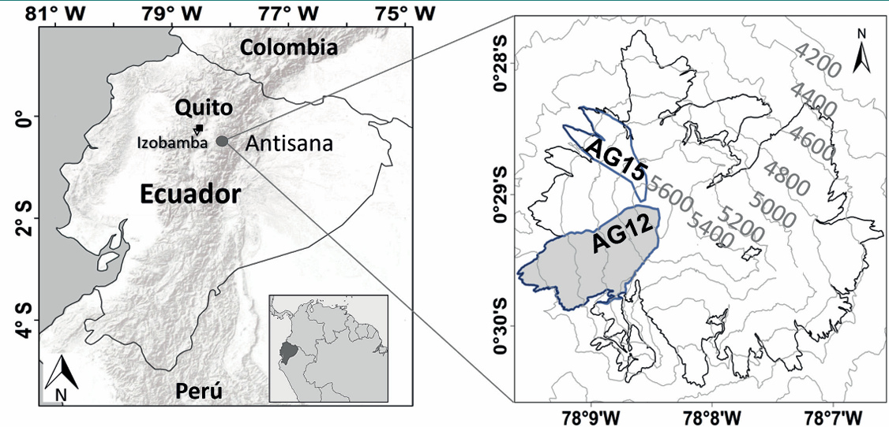
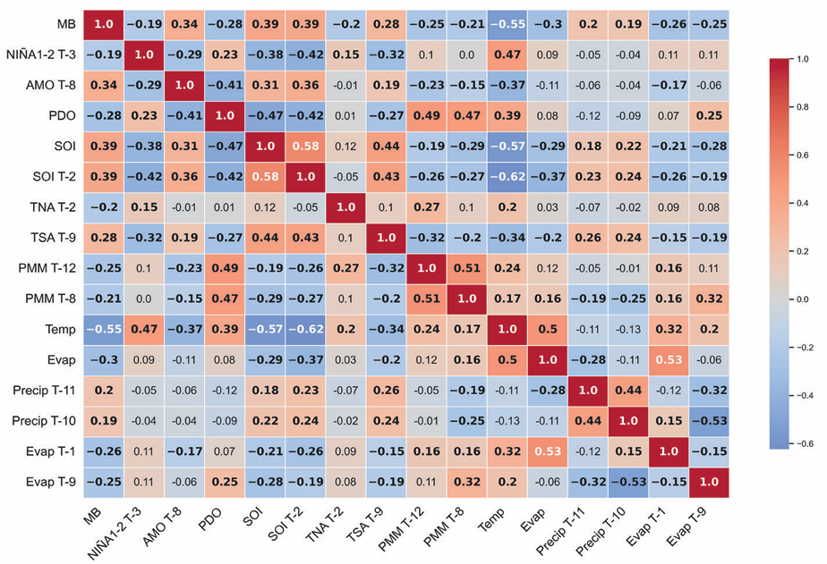

Proyecto de Investigación en Machine Learning aplicado a Glaciares
Participación en un proyecto de investigación sobre el retroceso del glaciar Antisana 15 mediante técnicas de Machine Learning en Python, aplicando modelos como KNN y Random Forest con datos climáticos e índices oceánicos. El estudio permitió analizar patrones de cambio glaciar y fortalecer habilidades en análisis de datos y modelado predictivo.
Ver detallesVer menos
Participación en un proyecto de investigación sobre el retroceso del glaciar Antisana 15 mediante técnicas de Machine Learning en Python, aplicando modelos como KNN y Random Forest con datos climáticos e índices oceánicos. El estudio permitió analizar patrones de cambio glaciar y fortalecer habilidades en análisis de datos y modelado predictivo.
